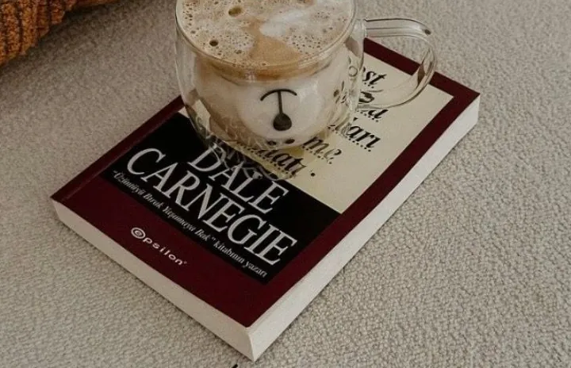
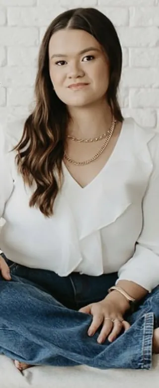
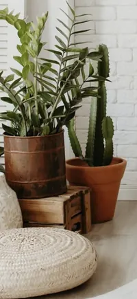

Prazer, eu sou a
ArianeCristina
Acolhimento, ciência e cuidado em cada atendimento.
02Manifesto
- A essência se multiplica, seja ela qual for.
- Por trás de cada comportamento, existe uma história.
- Toda história merece ser ouvida com respeito.
Dra. Ariane Cristina
03Escuta qualificada
Escuta qualificada
É ouvir além da queixa. É acolher sem julgamento, com técnica, empatia e presença.

-
i.
Identificação precoce do sofrimento
Perceber cedo o que ainda não tem nome muda o caminho do cuidado.
-
ii.
Fortalecimento do vínculo
Confiança se constrói devagar, uma consulta de cada vez.
-
iii.
Melhor adesão ao tratamento
Quem se sente compreendido entende o porquê de cada passo.
-
iv.
Cuidado mais humano
Você não é um diagnóstico. É uma história inteira.
04Como posso te ajudar
Cada sofrimento tem um jeito de ser cuidado.
Toque em um tema. Você vai encontrar um texto curto, alguns sinais que merecem atenção e um atalho para marcar a conversa.
-
Preocupação que não desliga, corpo em alerta, noites que não descansam. A ansiedade fala alto quando não encontra espaço para ser ouvida. Aqui, a gente começa entendendo o que ela está tentando dizer.
Sinais que merecem atenção
- Preocupação constante e difícil de controlar
- Aperto no peito, falta de ar ou coração acelerado sem causa clínica
- Evitar lugares ou situações por medo
- Sono leve, interrompido ou que não restaura
-
Depressão e transtorno bipolar mudam a forma de sentir, pensar e viver os dias. Não é falta de força de vontade. É uma condição de saúde que pede avaliação cuidadosa e acompanhamento contínuo.
Sinais que merecem atenção
- Tristeza ou vazio que persiste por semanas
- Perda de interesse no que antes fazia sentido
- Fases de muita energia, pouco sono e impulsividade
- Mudanças no apetite, no sono e na concentração
-
Quando as emoções chegam em ondas muito fortes e as relações viram terreno instável, existe sofrimento real por trás. O cuidado é feito com paciência, sem rótulos e em parceria com a psicoterapia.
Sinais que merecem atenção
- Relações intensas e instáveis
- Emoções que mudam rápido e com muita força
- Sensação persistente de vazio
- Padrões que se repetem e trazem sofrimento
-
Perceber a realidade de um jeito diferente assusta a pessoa e quem está perto. Com acompanhamento próximo, a família ganha orientação e a pessoa, um lugar seguro para ser cuidada.
Em sintomas intensos ou risco imediato, procure um pronto-socorro ou ligue 192.
Sinais que merecem atenção
- Ouvir ou ver coisas que outras pessoas não percebem
- Desconfiança intensa e sem motivo claro
- Pensamento ou fala desorganizados
- Isolamento e mudança brusca de comportamento
-
Cada criança tem seu tempo e seu jeito de estar no mundo. A avaliação olha para o desenvolvimento, a família e a escola, e ajuda a construir uma rede de apoio que faça sentido para ela.
Sinais que merecem atenção
- Atraso ou perda de fala e de habilidades já conquistadas
- Pouco contato visual ou pouco interesse em brincar junto
- Interesses muito restritos, rotinas rígidas, sensibilidade a sons e texturas
- Mudanças de comportamento em casa ou na escola
-
Quem cuida também precisa de cuidado. Maternar uma criança atípica pede força todos os dias, e esse cansaço tem nome, tem lugar e merece escuta, sem culpa.
Sinais que merecem atenção
- Cansaço que não passa com descanso
- Culpa constante e sensação de estar sozinha
- Tristeza ou ansiedade no pós-parto
- Dificuldade de cuidar de si enquanto cuida de todos


05Sobre mim
Ciência que sabe escutar.
Médica com experiência em urgência, Atenção Básica e saúde mental, com atuação no cuidado integral e humanizado. Experiência no acompanhamento de transtornos do humor, transtornos de personalidade, transtornos psicóticos, transtornos de ansiedade e outras condições psiquiátricas.
Em constante aprimoramento técnico-científico, com interesse especial em saúde mental infantil, Transtorno do Espectro Autista (TEA) e cuidado psicossocial, buscando oferecer uma assistência ética, individualizada e baseada em evidências científicas.
Médica com atuação em saúde mentalPresencial e online
06Vozes do cuidado
O que eu levo para cada encontro.
Reflexões da médica sobre o cuidado. Este site não publica relatos de pacientes.
07Como funciona
Do primeiro oi ao plano de cuidado.
Quatro passos, no seu ritmo. Você sabe o que esperar antes mesmo de chegar.
Primeiro contato
Você me chama pelo WhatsApp. Combinamos o melhor horário e a modalidade, presencial ou online.
Primeira consulta
Um encontro sem pressa. Escuto sua história, sua rotina, o que dói e o que sustenta você.
Compreensão
Organizo com você o que foi percebido. Quando preciso, peço exames ou converso com outros profissionais, sempre com sua autorização.
Plano de cuidado
Construímos juntos um plano individualizado, com acompanhamento próximo e ajustes ao longo do caminho.
08Agendamento
Sua mensagem, pronta para enviar.
Escolha as opções ao lado. O texto se monta sozinho e abre no WhatsApp, para você revisar antes de enviar.
Nenhum dado é guardado ou enviado por este site. Tudo acontece no seu aparelho, até você tocar em enviar no WhatsApp.
09Dúvidas frequentes
Perguntas que chegam antes da consulta.
-
Sim. A teleconsulta segue as normas do Conselho Federal de Medicina, com a mesma ética e o mesmo sigilo da consulta presencial. Você só precisa de um lugar reservado e de uma conexão estável. Plataforma utilizada: [CONFIRMAR].
-
A primeira consulta costuma ser mais longa, porque preciso conhecer sua história com calma. Duração da primeira consulta: [CONFIRMAR]. Retornos: [CONFIRMAR].
-
Sim. O que é dito na consulta é protegido pelo sigilo médico, previsto no Código de Ética Médica. Informações só são compartilhadas com a sua autorização ou nas situações excepcionais previstas em lei. No atendimento de crianças, os responsáveis participam do cuidado, sempre com respeito à privacidade de cada um.
-
Forma de atendimento: [CONFIRMAR: particular e/ou convênios aceitos]. Emissão de recibo para pedido de reembolso: [CONFIRMAR]. Os valores são informados diretamente pelo WhatsApp.
-
Conversamos sobre o que trouxe você até aqui, sua história, sua rotina e sua saúde de forma geral. Se tiver exames, receitas ou relatórios anteriores, traga. Para crianças, a primeira conversa costuma incluir os responsáveis, e relatórios da escola ou de outros profissionais ajudam muito.